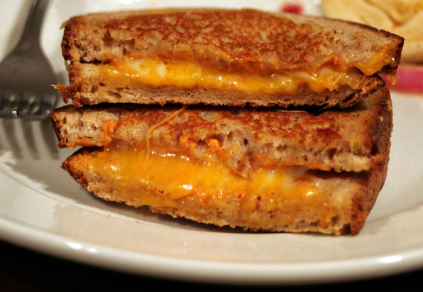

Dank Grilled Cheese

Description
Whoa, man, check it out! We've got ourselves a Grilled Cheese
Extravaganza, you dig? Picture this: two slices of bread, toasted 'til
they're crispy and golden, like, cosmic, ya know? And then, right in the
middle, there's this epic cheese blend, meltin' away like your worries on
a sunny day.
This sandwich, dude, it's like a flavor trip, a cheesy journey through the
universe of your taste buds. It's the ultimate chill-out grub, the kind
that makes your taste buds high-five each other and say, 'Dude, this is
righteous.' So grab a napkin, kick back, and let your taste buds ride the
waves of Grilled Cheese Mania, where the cheese is groovier than a jam
session at Woodstock. It's time to get your munchies on, man! 🧀🌿🤙
Ingredients
Steps
-
Preheat the Skillet or Griddle: Place a non-stick skillet or griddle
over medium-low heat and allow it to warm up while you prepare the
sandwich.
-
Butter the Bread: Spread a thin layer of butter on one side of each
slice of bread. This will be the outer side of the sandwich.
-
Layer the Cheese: Place slices or grated cheese on the unbuttered side
of one bread slice. If you're adding any optional fillings, layer them
on top of the cheese.
-
Top with Another Bread Slice: Place another bread slice on top with the
buttered side facing up.
-
Grill the Sandwich: Carefully transfer the sandwich to the preheated
skillet or griddle. Cook for 2-4 minutes on each side, or until the
bread is golden brown and the cheese is melted. You can press down on
the sandwich gently with a spatula to help it cook evenly.
-
Serve: Once both sides are crispy and the cheese is melted, remove the
grilled cheese from the skillet, let it cool for a minute or two, and
then slice it diagonally if desired. Serve hot and enjoy!